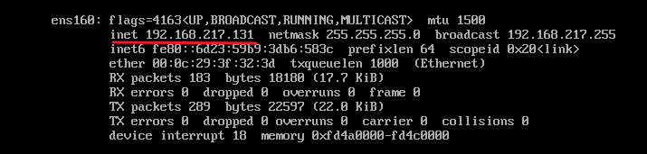
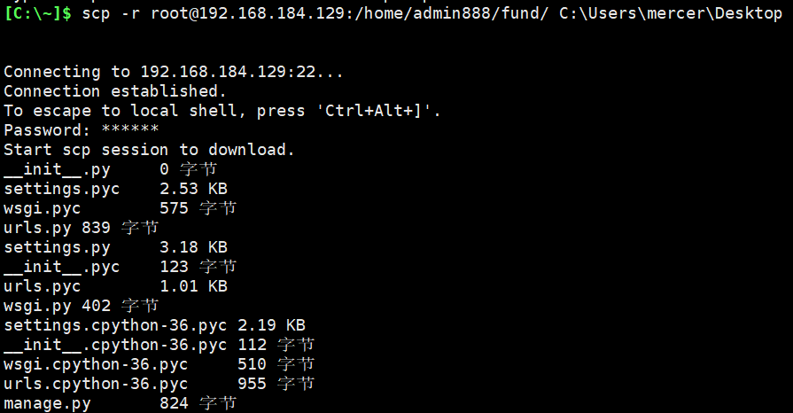
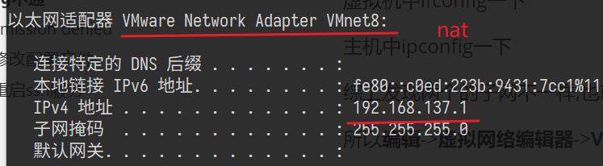
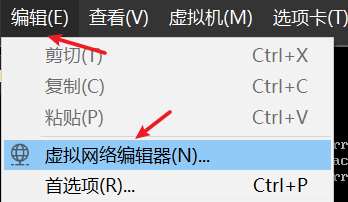
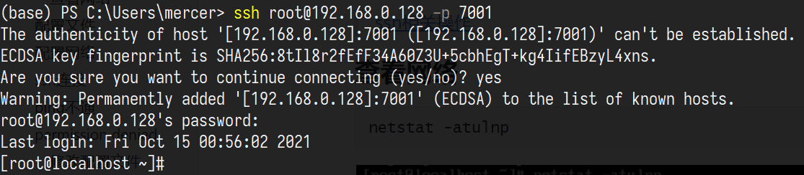
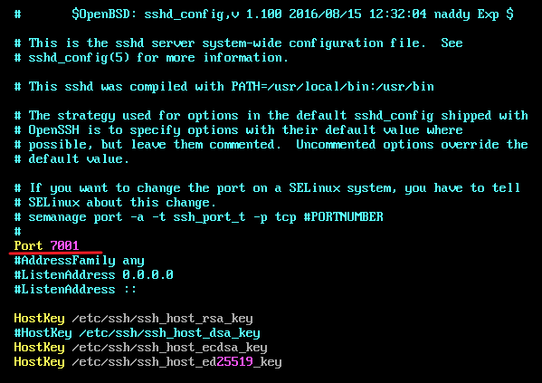

ssh连接虚拟机
配置文件
vim中输入
/可以进行搜索
1 | vim /etc/ssh/sshd_config |
将 PasswordAuthentication 改为 yes

将上图的no,改成yes
为防止使用root登录时发生permission denied的情况
将PermitRootLogin no(服务端 SSH 服务配置了禁止root用户登录策略)的注释取消掉,并改成yes
按需要重启ssh服务,一般不用
1 | service sshd restart |
对于centos,重启命令有点不一样
1 | systemctl restart sshd.service |
配置网络
ifconfig查看虚拟机IP地址

虚拟机->编辑->虚拟网络编辑器

修改

==注意这里的子网IP需要设置的和虚拟机所在IP一致！！==

ssh连接
cmd中输入
1 | ssh root@192.168.217.131 (-p xxxx) |
scp远程复制
如果ssh能连接上，就可以用这个命令进行复制
复制文件
1
scp root@192.168.184.129:/home/admin888/fund/db.sqlite3 C:\Users\mercer\Desktop
复制文件夹
1
scp -r root@192.168.184.129:/home/admin888/fund/ C:\Users\mercer\Desktop

一些报错的解决方法
ping不通
回寝室后又尝试使用ssh,但失败了,说连接超时
首先,尝试在主机ping了一下虚拟机,发现失败了
虚拟机中ifconfig一下
主机中ipconfig一下

综上发现两个的子网不一样,也就是说不在同一个网段
所以编辑->虚拟网络编辑器->VMnet8->修改子网,使其在同一网段


这里改成192.168.137.0
这时就ping的通了
端口错误
1 | netstat -atulnp |

发现ssh服务开在7001端口!!!!
长安杯20的时候被这个端口坑的不轻

其实在配置页中也可以看到端口信息

Permission Denied

后来发现是将 PasswordAuthentication 改为 yes 后,没保存
所以不能通过输入密码登入